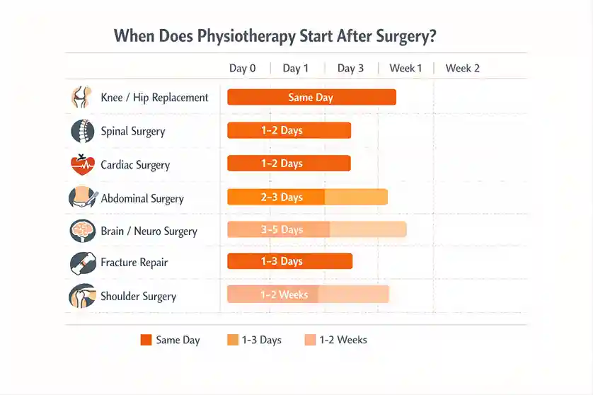
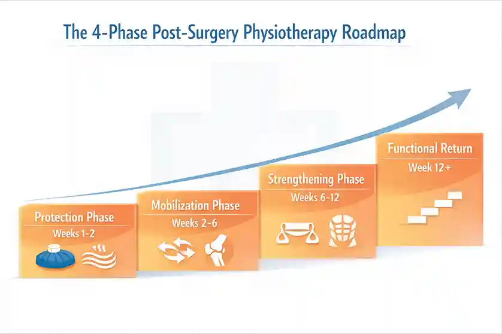

Post-Surgery Physiotherapy: When to Start and What the Recovery Roadmap Looks Like


31
MAR

Dr. Krutika Bhadane
PT (Neuro), BPTh, MPTh (Neurosciences), 3+ years clinical
experience in neurological rehabilitation
Post-Surgery Physiotherapy: When to Start and What the Recovery Roadmap Looks Like
Two Neighbors. One Surgery. Two Very Different Recoveries.
Picture two neighbors. Ramesh and Vijay, both in their late 50s, both living in Pune, both underwent total knee replacement surgery on the same day at the same hospital. Same surgeon. Same implant. Same discharge notes.
Ramesh went home, followed the rest instructions on his discharge sheet, and stayed in bed for weeks. He figured surgery had done the hard work, and the body needed silence and time.
Vijay did something different. On day three, a physiotherapist came to his home. Gentle exercises started. Gradual weight-bearing. Breathing drills. A clear weekly plan.
Six weeks later, Ramesh had a swollen, stiff knee. He could barely bend it past 60 degrees. His muscles had wasted from inactivity. He needed months of corrective rehabilitation that could have been avoided entirely.
Vijay was walking unaided, climbing stairs, and sleeping without pain.
The surgery was identical. The difference was timing and physiotherapy.
This story plays out every day in homes and hospitals across India. And it is the reason this guide exists.
Post-surgery physiotherapy is a structured program of guided exercises, manual therapy, and progressive movement that begins after a surgical procedure to restore strength, mobility, and independence as the body heals.
The Biggest Myth That Is Slowing Down Recovery
Resting More Does NOT Mean Healing Faster
Most families believe that the more a patient rests after surgery, the better. It feels logical. The body has been through trauma, so why push it?
Here is the surprising truth: extended bed rest after surgery is one of the fastest ways to make recovery harder.
Within 3 to 5 days of complete inactivity, muscles begin to atrophy. Joints stiffen. Circulation slows. The risk of deep vein thrombosis, meaning dangerous blood clots, rises sharply. For patients recovering from cardiac or abdominal surgery, immobility also raises the risk of pneumonia.
Key stat (2025): Patients who begin physiotherapy within 24 hours of surgery accelerate recovery by up to 40%. Those aged 40 to 60 who receive proper post-operative PT reduce their complication risk by 60%. (Source: Evolve Physical Therapy, 2025)
Surgery fixes a structural problem. Physiotherapy fixes the functional outcome. Without rehabilitation, a patient can have a surgically repaired body that still cannot do what they need it to do.
The operating room is where surgery ends. The rehabilitation room is where healing truly begins.
Ready to start your recovery on the right foot? Book a post-surgery physiotherapy assessment at Apricot Care, Kharadi, Pune. Walk-ins and online consultations welcome.
What Nobody Tells You: Physiotherapy Can Start Before Surgery
The Prehabilitation Advantage

Almost no clinic in India mentions this to patients during the pre-surgery conversation. There is a critical window before a planned surgery where physiotherapy can dramatically improve what happens after the operation. This is called prehabilitation, or prehab.
Prehabilitation means starting physiotherapy, breathing exercises, strength training, and nutritional support in the 2 to 6 weeks before an elective surgery. The goal is to bring the body into its best possible condition so it can withstand surgical stress and bounce back faster.
Key research (Journal of Physiotherapy, 2024): Patients who received even a single preoperative physiotherapy session had 47% lower odds of developing postoperative pulmonary complications after abdominal surgery. (Source: PubMed, 2024)
A retrospective study of 1,043 knee replacement patients found that 37.1% of those who completed prehab were discharged on post-operative day 1, compared to only 27.0% of those who did not. They went home faster, recovered better, and needed fewer costly resources ( PMC study).
What Prehab Looks Like in Practice
- Strengthening the muscles surrounding the surgical site
- Breathing exercises to protect lung function during surgery and after
- Targeted mobility work to reduce post-surgical joint stiffness
- Patient and family education on safe movement after the operation
- Nutritional guidance to support tissue repair from day one
If you or a family member has a scheduled surgery planned in the coming weeks, ask about a pre-surgery physiotherapy consultation. It is one of the most overlooked steps in the entire recovery process.
Scheduled for surgery soon? Talk to our team at Apricot Care about a prehabilitation plan before your operation. Early preparation makes a measurable difference.
When to Start Physiotherapy: A Guide by Surgery Type

The Answer Is Not the Same for Every Operation
Most websites give a vague answer: start physiotherapy 1 to 4 weeks after surgery. The reality is more specific. The ideal start time depends entirely on the type of surgery, the patient's age, and the condition of surrounding tissue.
Here is a practical reference breakdown:
| Surgery Type | When PT Starts | Initial Focus |
|---|---|---|
| Total Knee / Hip Replacement | Day 1 to 2 post-op (in-patient) | Ankle pumps, safe walking, bed mobility |
| Spinal Surgery (Discectomy / Fusion) | 24 to 72 hours post-op | Breathing, posture correction, gentle walking |
| Cardiac Surgery (Bypass / Valve) | Day 2 to 3 in ICU or ward | Respiratory PT, gradual mobilization |
| Abdominal / Oncology Surgery | Within 24 hours of surgery | Breathing, DVT prevention, wound-safe movement |
| Brain or Neuro Surgery | As soon as medically stable | Neuroplasticity-based rehab, sensory tasks |
| Fracture Repair (Arm / Leg / Foot) | Post-immobilization, surgeon-directed | Range of motion, reduce muscle atrophy |
| Shoulder / Rotator Cuff Surgery | 1 to 2 weeks post-op | Passive range of motion exercises initially |
Always follow your surgeon's clearance before starting any physiotherapy. The physiotherapist and surgeon must coordinate the recovery plan together. Starting at the wrong time, or in the wrong way, can cause real harm.
The 4-Phase Recovery Roadmap: What Your Body Goes Through

Phase 1: The Protection Phase (Weeks 1 to 2)
The first two weeks are about doing no harm to the surgical site. The goal is not to push limits. It is to support healing.
During this phase, our physiotherapy team focuses on:
- Passive movements to maintain basic joint mobility without strain
- Breathing exercises to prevent lung complications
- Respiratory therapy techniques including respiratory physiotherapy for cardiac and abdominal surgery patients
- Ankle pumps and gentle leg movements to prevent blood clots
- Ice, compression, and elevation for swelling and pain management
- Caregiver training on positioning and wound monitoring
Phase 2: The Early Mobilization Phase (Weeks 2 to 6)
This is where recovery starts to feel real. Active movement begins.
What most patients do not realize is that scar tissue formation begins in this phase. If left unmanaged, it can permanently limit range of motion. Physiotherapists use manual therapy, soft tissue mobilization, and myofascial release techniques to keep scar tissue from restricting movement.
A 2024 meta-analysis (PMC / International Wound Journal) found that physiotherapy significantly improved wound healing outcomes and reduced scar formation in post-surgical knee patients, with strong measurable results on clinical scoring scales. (Source:PMC, 2024)
Exercises in this phase include short daily walks, pelvic tilts, knee-to-chest stretches, and gentle resistance-free movement. Proprioception, meaning the body's ability to sense its own position in space, also begins to rebuild here. This is often ignored but is critical for preventing falls and re-injury.
Patients recovering from stroke, spinal cord injury, or brain surgery also begin neuro-rehabilitation work at this stage, focusing on basic sensory and motor retraining.
Phase 3: The Strengthening Phase (Weeks 6 to 12)
By this point, healing is well underway. The focus shifts from protection to rebuilding strength.
Core stability work is especially important for patients recovering from spinal and abdominal surgeries. The deep muscles that support the spine and pelvis weaken fast during recovery, and without targeted strengthening, patients remain vulnerable to future injury.
Our occupational therapy team joins the recovery plan in this phase to help patients rebuild the ability to perform daily tasks like dressing, cooking, and managing at home independently.
Exercises include partial squats, resistance band work, leg raises, balance training, and low-impact aerobics like walking or stationary cycling.
Phase 4: The Functional Return Phase (Week 12 and Beyond)
The final phase prepares the patient to return to their real life: climbing stairs, carrying groceries, returning to work, driving, or resuming sport.
For neurological surgery patients, including those recovering from stroke, brain tumors, or spinal cord injuries, this phase involves advanced neuroplasticity-based rehabilitation. The brain has a documented ability to rewire itself when given the right, repetitive, task-specific input. This is the foundation of neuro rehabilitation. Centers that use robotic rehabilitation technology and VR-based therapy can accelerate this rewiring significantly.
Duration note: Post-surgery physiotherapy typically ranges from 6 weeks to 6 months or more, depending on the complexity of the procedure. There is no universal timeline. Recovery is as unique as the person going through it.
Not sure which recovery phase you or your loved one is in? Request a physiotherapy assessment at Apricot Care. Our team will map out a clear, personalized roadmap from day one.
The Recovery Side Nobody Talks About: Mental Health After Surgery
Post-Surgical Depression Is Real and It Directly Affects Physiotherapy
Here is something most rehabilitation websites never mention. Depression, anxiety, and even post-traumatic stress are clinically common after surgery. They make physiotherapy significantly harder.
Patients who feel hopeless skip sessions. Those who are anxious under-perform exercises out of fear. Those who are grieving their previous physical ability have lower pain tolerance. The emotional state of the patient is not separate from recovery. It is woven into every single session.
A 2025 study (PMC) found that patients with high preoperative anxiety experienced a 15% longer recovery time than those with lower anxiety. Preoperative psychological screening identified at-risk patients with 80% effectiveness. (Source:PMC, 2025)
For older patients, the picture is even more challenging. Research shows that between 5% and 52% of senior patients experience anxiety or depression during the perioperative period. Loneliness alone increases postoperative mortality risk, with odds rising by 76% for each point increase in loneliness scores in non-elective surgery cases (The Supportive Care).
Integrated care is the answer. When psychological rehabilitation therapy, occupational therapy, and physiotherapy work together, patients heal faster and comply better with their programs. A rehabilitation center that treats the whole person produces measurably better outcomes than one that treats only the surgical site.
If you notice your family member becoming withdrawn, losing interest in recovery, or expressing hopelessness about their progress, treat that as a clinical signal, not just sadness. Raise it with the care team immediately.
Apricot Care integrates psychological rehabilitation support directly into post-surgical recovery plans for patients who need it.
Nutrition: The Hidden Accelerator Most People Ignore
What You Eat During Recovery Shapes How Fast You Heal
Almost no physiotherapy clinic in India discusses this with patients at discharge. But the food a patient eats during rehabilitation has a direct, documented impact on tissue repair, muscle rebuilding, and inflammation management.
Our dedicated nutrition therapy team at Apricot Care builds a recovery-specific nutrition plan alongside the physiotherapy program. Here is what recovery nutrition should focus on:
| Nutrient / Food | Role in Recovery | Good Indian Sources |
|---|---|---|
| Protein | Rebuilds muscle, ligament, and tendon tissue | Eggs, dal, paneer, curd, sprouts, chicken |
| Vitamin C | Drives collagen synthesis for wound healing | Amla, guava, citrus fruit, tomatoes |
| Omega-3 Fatty Acids | Reduces post-surgical inflammation | Flaxseed, walnuts, fatty fish |
| Magnesium | Supports muscle function and sleep quality | Banana, pumpkin seeds, leafy greens |
| Turmeric (Curcumin) | Natural anti-inflammatory compound | Dal, sabzi, warm turmeric milk |
| Zinc | Accelerates wound healing and supports immunity | Pumpkin seeds, sesame, whole grains |
What to reduce during recovery: ultra-processed snacks, alcohol, excess refined sugar, and trans fats. These increase systemic inflammation, suppress immune function, and slow wound closure.
Nutrition therapy should be a built-in part of any post-surgery recovery plan, not an afterthought. Ask your care team about a recovery diet consultation.
Red Flags: When to Stop Physiotherapy and Call Your Care Team
Knowing When to Pause Is Just as Important as Knowing When to Push
Every patient will feel soreness during physiotherapy. That is normal. Muscles that have not been used are being reactivated. But there is a clear difference between productive discomfort and warning signs that need medical attention immediately.
Stop physiotherapy and contact your care team right away if you notice any of the following:
- Sudden sharp or severe pain during exercise, clearly different from baseline soreness
- Significant increase in swelling or warmth around the surgical site
- Fever above 38 degrees Celsius, chills, or signs of infection
- Wound opening, unusual discharge, or color changes around the incision
- Spreading numbness, tingling, or new weakness beyond the surgical area
- Severe shortness of breath or chest tightness, which is critical after cardiac or thoracic surgery
- Extreme dizziness or fainting during or after a session
These are not signs to wait out. They require same-day communication with your surgeon or physiotherapist. For patients in Pune, you can reach the Apricot Care team directly on our contact page or via WhatsApp.
At-Home Physiotherapy vs. Supervised Rehabilitation: Which Is Right for You?
The Answer Depends on More Than Just the Surgery
A 2024 clinical study published in the Journal of Arthroplasty found that over half of knee replacement patients could self-direct their rehabilitation and maintain excellent outcomes. However, patients who met specific clinical criteria saw significantly better results with even 4 supervised sessions. This matters when planning your recovery route.
Here is a simple guide to help families decide:
| Your Situation | Recommended Approach |
|---|---|
| Young patient, straightforward orthopedic surgery, high motivation | Structured home program with periodic check-ins |
| Elderly patient, post-cardiac or spinal surgery, comorbidities present | Supervised in-clinic or home-visit rehabilitation |
| Neurological surgery (stroke, brain, spinal cord) | Intensive supervised neuro rehab with robotic and VR-assisted therapy |
| Post-oncology surgery, tracheostomy, or ICU recovery | Advanced care program with multidisciplinary team |
| Patient in remote area or with limited mobility | Online therapy and tele-rehabilitation |
A 2024 systematic review on tele-rehabilitation (PMC) confirmed that video-based physiotherapy achieved outcomes comparable to in-person sessions for most orthopedic post-surgery patients at 4 to 6 weeks. This makes a hybrid care model, combining in-clinic sessions with guided home exercises and online monitoring, one of the strongest approaches for patients in urban India.
At Apricot Care, all three pathways are available: in-clinic sessions at our Kharadi facility, home visits by our physiotherapy team, and structured online therapy sessions with certified therapists.
The Caregiver's Role: You Are Part of the Recovery Team
What Most Families Do Not Know About Their Own Role in Healing
Recovery does not happen only during physiotherapy sessions. A large portion of progress, or regression, happens at home between sessions. That puts the family member or caregiver in a critical position.
Here is what caregivers can practically do to support recovery:
- Help the patient perform home exercises at the right time and in the correct form
- Monitor for the red flags listed above and report them promptly
- Create a clean, obstacle-free movement path at home to prevent falls
- Support the patient emotionally and celebrate small milestones genuinely
- Attend at least one physiotherapy session to learn correct technique and positioning
- Manage nutrition according to the recovery plan given by the care team
- Avoid over-assisting: letting patients do what they can builds independence and confidence
Research consistently shows that patients with strong home support systems recover faster and report higher satisfaction with their rehabilitation. The caregiver is not a bystander. They are a clinical asset.
Apricot Care runs caregiver training programs as part of our rehabilitation process, so families feel confident and capable in their support role from day one.
How Apricot Care Supports Your Complete Recovery Journey
At Apricot Care Assisted Living and Rehabilitation in Kharadi, Pune, post-surgery physiotherapy is not a single service. It is a coordinated, multidisciplinary recovery system. From prehabilitation consultations before your operation to advanced neuro rehabilitation after it, every stage of recovery is supported by a team of experienced physiotherapists, neurophysiotherapists, respiratory therapists, nutritionists, and psychological rehabilitation specialists working together.
The center is equipped with advanced robotic rehabilitation technology and VR-based therapy tools, making it one of the most specialized neuro rehabilitation centres in Pune for post-surgical and neurological recovery. Care is available in-clinic, at home, and through online therapy sessions so your recovery plan fits your life, not the other way around.
Key Takeaways: Your Post-Surgery Physiotherapy Checklist
- Physiotherapy should start within 24 to 72 hours of most surgeries, not weeks later.
- Consider prehabilitation before planned surgery. It reduces complications and shortens recovery time.
- Recovery moves through 4 clear phases. Each one requires different exercises and goals.
- Scar tissue, mental health, and nutrition are all active parts of recovery, not optional extras.
- Red flags need same-day attention: sharp pain, fever, wound changes, or chest tightness.
- Caregivers play a measurable, documented role in recovery outcomes.
- Hybrid care models combining supervised sessions with home and online therapy are clinically validated.
Recovery after surgery is not passive. It is a planned, active process with a clear roadmap. The patients who come out stronger are the ones who start at the right time, follow a structured plan, and treat their body as a complete system: physical, nutritional, and emotional.
Think about the person in your life who is facing surgery, or recovering from one right now. Based on what you have read, what is the one step that could make the biggest difference in their recovery? Start that conversation with our team today.
Book a consultation at Apricot Care, Pune: neurorehabilitationcentre.com/contact | Call / WhatsApp: +91 73876 41462 | Kharadi, Pune
Sources and References
- Evolve Physical Therapy, Post-Surgery Physical Therapy Guide (2025): https://evolveny.com/blogposts/post-surgery-physical-therapy-guide
- PMC, Preoperative Physical Therapy and Shorter LOS after TKA: https://pmc.ncbi.nlm.nih.gov/articles/PMC8008722/
- Journal of Physiotherapy, Preoperative Physiotherapy Reduces Pulmonary Complications by 47% (2024): https://pubmed.ncbi.nlm.nih.gov/38472053/
- PMC, Assessing Effectiveness of Post-Operative In-Patient Physical Therapy Services: https://pmc.ncbi.nlm.nih.gov/articles/PMC5506300/
- PMC, Mental Health and Surgery Integration (2025): https://pmc.ncbi.nlm.nih.gov/articles/PMC12430879/
- The Supportive Care, Mental Health Challenges During Post-Surgery Recovery for Seniors: https://www.thesupportivecare.com/blog/mental-health-challenges-during-post-surgery-recovery-for-seniors
- Journal of Arthroplasty, KAPPA Non-Randomized Controlled Trial (2024): https://pubmed.ncbi.nlm.nih.gov/38331361/
- PMC, Effectiveness of Telerehabilitation for Functional Recovery After Orthopedic Surgery (2024): https://pmc.ncbi.nlm.nih.gov/articles/PMC10979691/
- PMC, Gastrointestinal Cancer Surgery Physiotherapy Meta-Analysis (2024): https://pmc.ncbi.nlm.nih.gov/articles/PMC11853706/
- PMC, Physiotherapy and Wound Healing in Post-Surgical Knee Patients (2024): https://pmc.ncbi.nlm.nih.gov/articles/PMC10869649/
- JAMA Network Open, Prehabilitation for Orthopedic Surgery: Systematic Review (2023): https://pubmed.ncbi.nlm.nih.gov/37052919/
About
author
Dr. Krutika Bhadane is a Neurophysiotherapist and Clinical Physiotherapist at Apricot Care, Kharadi, Pune, with 3 years of experience in adult neurological rehabilitation and post-surgical physiotherapy.